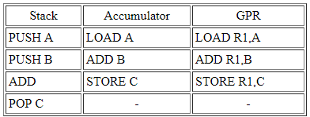

La función principal es ejecutar instrucciones, la organización viene condicionada por las tareas
que debe realizar y por cómo debe hacerlo operan según una señal de sincronización conocida como
señal de reloj (es un cristal de cuarzo). Incluye tantos registros visibles para el usuario todo
procesador dispone de 3 componentes
- UAL: que hace un conjunto de operaciones aritméticas lógicas con los datos almacenados dentro del
procesador.
- Conjunto de registros: espacio de almacenamiento temporal de datos e instrucciones dentro del
procesador.
- Unidad de control: circuito que controla el funcionamiento de todos los componentes del
procesador.
Controla el movimiento de datos e instrucciones dentro y fuera del procesador y también las
operaciones ALU.
Se emplean para controlar las instrucciones en ejecución, manejar direccionamiento de memoria y
propiciar la capacidad aritmética.
Los registros vienen de tres tipos: datos, direcciones e índice, que tiene lugar en casi todos los
aspectos de la operación del CPU.
El tamaño de un registro depende del CPU; los más simples tienen registros que aceptan 8 o 16 bits
de datos y los más complejos tienen registros de 32, 48 o 64 bits.
Son aquellos que pueden ser referenciado por medio del lenguaje maquina que ejecuta la CPU, los
registro que normalmente disponibles son:
Registros de propósito general, son aquellos que pueden guardar tanto datos como direcciones
Registro de datos, que pueden ser asignados por el programador a diversas funciones. En algunos
casos son de propósito general y pueden ser empleados por cualquier instrucción de máquina que lleve
a cabo operaciones sobre los datos.
Registros de direcciones, contienen direcciones en la memoria principal de datos y este tipo de
registro puede ser de propósito general o estar a un modo específico de direccionamiento.
Códigos de condición, también conocidos como indicadores o flags. Los códigos de condición, son bits
activados por el procesador como resultado de determinadas operaciones
Registros de control
Hay diversos registros de la CPU que se pueden emplear para controlar su funcionamiento. La mayoría
de éstos, en la mayor parte de las máquinas, no son visibles al usuario. Algunos de ellos pueden ser
visibles a instrucciones de máquina ejecutadas en un modo de control o de sistema operativo.
Naturalmente, máquinas diferentes tendrán diferentes organizaciones de registros y usará distinta
terminología. Se enumera aquí una lista razonablemente completa de tipos de registros, con una breve
descripción. Son esenciales cuatro registros para la ejecución de una instrucción: el contador de
programa, el registro de dirección, el registro de instrucción y el registro de datos.
El contador de programa contiene una dirección de instrucción. Típicamente, la CPU actualiza el PC
después de cada captación de instrucción de manera que siempre apunta a la siguiente instrucción a
ejecutar. Una instrucción de bifurcación o salto también modificará el contenido de PC. La
instrucción captada se carga en el registro de instrucción, donde son analizados el código de
operación y los campos de operando.
Se intercambian datos con la memoria por medio de registro de direcciones y el de datos. En un
sistema con organización de bus, el de direcciones se conecta directamente al bus de direcciones, y
el de datos directamente al bus de datos.
Los registros visibles al usuario, sucesivamente, intercambian datos con el de datos. Los cuatro
registros que acaban de mencionar se usan para la transferencia de datos entre la CPU y la memoria.
Dentro de la CPU, los datos tienen que ofrecerse a la ALU para su procesamiento. La ALU puede tener
acceso directo al de datos y a los registros visibles al usuario. Como alternativa, puede haber
registros intermedios adicionales en el límite de la ALU; estos registros sirven como registros de
entrada y salida de la ALU e intercambian datos con el de datos y los registros visibles al usuario.
Registros de estado
El registro de estado, también conocido como registro de bandera, palabra de estado del programa y
registro de código de condición, se define como un conjunto de bits de bandera dentro de un
procesador.
Un registro es un circuito procesador y es muy parecido a una ubicación de memoria, lo que significa
que los datos podrían escribirse y leerse. A diferencia de una ubicación de memoria, el registro de
estado a menudo no tiene una dirección porque el microprocesador la usa internamente. En una unidad
central de procesamiento (CPU) de 8 bits, se puede establecer un bit de registro de estado, igual al
número 1, o borrar , igual al número 0, mediante una variedad de resultados de operación del
procesador. El procesador a veces establece o borra los bits, pero otras veces, una instrucción de
programa particular establece o borra los bits.
Los bits de registro de estado también se denominan banderas o bits de bandera, y el programador los
utiliza para ciertos fines de programación. Cada bandera en un registro de estado tiene un propósito
único.
El indicador de acarreo se establece si una operación anterior hizo que el séptimo bit - o indicador
negativo - se desbordara, o hiciera que el indicador de transporte se desbordara. Se establece
durante los cambios de lógica, comparación y aritmética. El indicador de cero se establece si el
resultado de la operación más reciente fue 0.
Un indicador llamado "deshabilitar interrupción" funciona permitiendo o deshabilitando la operación
de interrupciones, que son instrucciones que detienen temporalmente ciertas operaciones para que se
puedan realizar otras operaciones. Cuando se establece este indicador en particular, no se permite
que funcionen las interrupciones, pero cuando está claro, se permiten las interrupciones. Otra
bandera llamada bandera decimal permite al procesador seguir un modo binario más avanzado para
realizar ecuaciones aritméticas impecables. Cuando se establece la bandera, utiliza este modo
binario avanzado. Otro bit de registro es el bit de interrupción, que se establece cuando se ejecuta
el comando Force Interrupt (BRK).
La búsqueda es el proceso de obtener instrucciones de un programa o un elemento de datos de la
memoria. El término decodificar se refiere al proceso de traducir las instrucciones a señales que la
computadora puede ejecutar.
Ejecutar es el proceso de llevar a cabo los comandos. Almacenamiento en este contexto significa
escribir el resultado a la memoria.
En algunas computadoras, el procesador busca, decodifica, ejecuta y almacena solo una instrucción a
la vez. En estas computadoras el procesador espera hasta que una instrucción completa las cuatro
etapas del ciclo antes de iniciar a trabajar con la siguiente instrucción.
Hoy día la mayoría de las computadoras personales soportan un concepto llamado pipelining:
Con pipelining los procesadores inician la búsqueda de una segunda instrucción antes de que se haya
completado el ciclo de la computadora de la primera instrucción. Los procesadores que cuentan con
pipelining habilitado son más rápidos en el procesamiento porque no tienen que esperar para que una
instrucción complete el ciclo de computadora antes de buscar la siguiente.
Un ciclo de instrucción (también llamado ciclo de fetch-and-execute o ciclo de fetch-decode-execute en inglés) es el período que tarda la unidad central de procesamiento (CPU) en ejecutar una instrucción de lenguaje máquina. Comprende una secuencia de acciones determinada que debe llevar a cabo el CPU para ejecutar cada instrucción en un programa. Cada instrucción del juego de instrucciones de un CPU puede requerir diferente número de ciclos de instrucción para su ejecución. Un ciclo de instrucción está formado por uno o más ciclos máquina. Para que cualquier sistema de proceso de datos basado en microprocesador (por ejemplo un ordenador o computadora personal) o microcontrolador (por ejemplo un reproductor de MP3) realice una tarea (programa) primero debe buscar cada instrucción en la memoria principal y luego ejecutarla.K
La segmentación de las instrucciones (pipeline) consiste en dividir el ciclo de ejecución de las
instrucciones en un conjunto de etapas. Estas etapas pueden coincidir o no con las fases del ciclo
de ejecución de las instrucciones.
El objetivo de la segmentación es ejecutar simultáneamente diferentes etapas de distintas
instrucciones, lo cual permite aumentar el rendimiento del procesador sin tener que hacer más
rápidas todas las unidades del procesador (ALU, UC, buses, etc.) y sin tener que duplicarlas.
La división de la ejecución de una instrucción en diferentes etapas se debe realizar de tal manera
que cada etapa tenga la misma duración, generalmente un ciclo de reloj. Es necesario añadir
registros para almacenar los resultados intermedios entre las diferentes etapas, de modo que la
información generada en una etapa esté disponible para la etapa siguiente.

Un conjunto de instrucciones o repertorio de instrucciones, juego de instrucciones o ISA (del inglés
Instruction Set Architecture, Arquitectura del Conjunto de Instrucciones) es una especificación que
detalla las instrucciones que una CPU de un ordenador puede entender y ejecutar, o el conjunto de
todos los comandos implementados por un diseño particular de una CPU.

El término describe los aspectos del procesador generalmente visibles a un programador, incluyendo
los tipos de datos nativos, las instrucciones, los registros, la arquitectura de memoria y las
interrupciones, entre otros aspectos.
Existe principalmente de 3 tipos: CISC (Complex Instruction Set Computer), RISC (Reduced Instruction
Set Computer) y SISC (Specific Instruction Set Computer).
La arquitectura del conjunto de instrucciones (ISA) se emplea a veces para distinguir este conjunto
de características de la microarquitectura, que son los elementos y técnicas que se emplean para
implementar el conjunto de instrucciones. Entre estos elementos se encuentras las microinstrucciones
y los sistemas de caché.
Procesadores con diferentes diseños internos pueden compartir un conjunto de instrucciones; por
ejemplo el Intel Pentium y AMD Athlon implementan versiones casi idénticas del conjunto de
instrucciones x86, aunque tienen diseños internos completamente opuestos.
Contar con diferentes formatos de instrucciones, implica contar con diferentes formas de obtener los
operandos de las instrucciones. Por lo general a estas múltiples formas se les conoce como modos de
direccionamiento. Los modos de direccionamiento en MIPS son:
Direccionamiento por registro, donde los operandos son registros. Los datos a operar están
contenidos en 2 registros de 32 bits y el resultado será colocado en otro registro, del mismo
tamaño. Ejemplos de instrucciones que usan este modo de direccionamiento: add, sub, slt, etc.
Direccionamiento base o desplazamiento, donde uno de los operandos está en una localidad de
memoria
cuya dirección es la suma de un registro y una constante que forma parte de la misma instrucción.
Ejemplos de instrucciones que usan este modo de direccionamiento: lw, sw, etc.
Direccionamiento inmediato, donde uno de los operandos es una constante que está en la misma
instrucción. Ejemplos de instrucciones que usan este modo de direccionamiento: addi, slti, etc.
Direccionamiento relativo al PC, donde se forma una dirección sumando una constante, que está
en la
instrucción, con el registro PC (Program Counter). El resultado de la suma corresponde a la
dirección destino si un brinco condicional se va a realizar. Ejemplos de instrucciones que usan este
modo de direccionamiento: beq y bne.
Direccionamiento pseudo directo, donde la dirección destino de un salto corresponde a la
concatenación de 26 bits que están en la misma instrucción con los bits más significativos del PC.
Ejemplos de instrucciones que usan este modo de direccionamiento: j y jal.